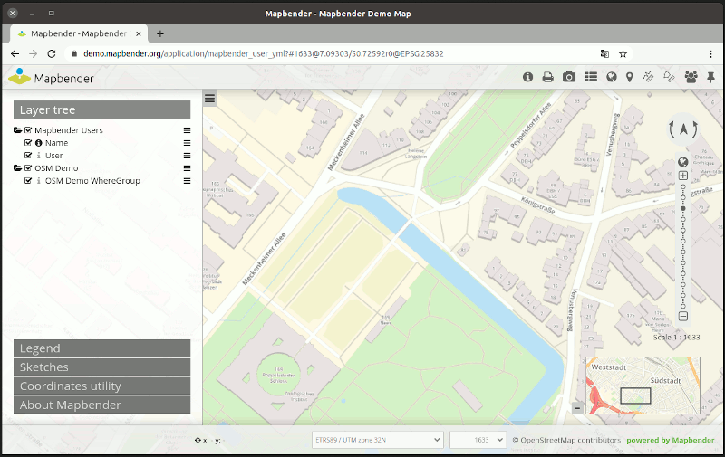

Mapbender¶
Framework per geoportali¶
Mapbender è uno dei progetti laureati OSGeo. E” un framework per geoportali basato su webper pubblicare, registrare, visualizzare, navigare, e garantire accessi sicuri ai servizi di infrastrutture dati territoriali.
Mapbender è la punta dell’iceberg, un metalayer di software che offre accesso a componenti di SDI conformi agli standard internazionali. Mapbender consente agli utenti di creare facilmente browser personalizzati a partire da un’ampia gamma di widget, e richiede minima o nessuna capacità di programmazione. Gli widget si integrano con le funzionalità del server per offrire funzionalità avanzate come proxy di sicurezza, digitalizzazione, snap automatico e altro.
Le applicazioni di gestione di Mapbender sono di uso semplice e immediato, e offrono funzionalità molto mirate al funzionamento di componenti di SDI distribuite su grande scala. E” lo strumento preferito per gestori di SDI che devono manutenere, categorizzare e monitorare servizi di mappe e di feature. Mapbender assicura l’accesso a singoli utenti, gruppi e gestisce l’accesso da macchina a macchina. La conformità a servizi standard, some il WMS OGC, permetted di sfruttare i servizi interoperabili da una moltitudine di piattaforme server.
Mapbender si basa su Symfony, OpenLayers e jQuery.
{kind=link}
Caratteristiche principali¶
- Interfacce di mappatura web semplici da creare tramite applicazioni preimpostate
- aggiunta/rimozione/personalizzazione di applicazioni
- Creazione di applicazioni con funzione di digitalizzazione
- Creazione di applicazioni mobili
- Stampa di mappe di alta qualità a partire da vostri template PDF.
- Digitalizzazione via SQL
- Caricamento e condivisione di WMS OGC remoti (caching delle capabilities)
- organizzazione dei WMS caricati per gli overlay
- modifica della visibilità dei layer
- ordinamento
- formattazione
- Creazione di utenti e gruppi, condivisione e concessione degli accessi a servizi e moduli
- Limitazione dell’accesso utenti con il modulo di sicurezza proxy OWS tramite server fidati
- Monitoraggio di protocolli criptati, notifica dello stato e servizio di aggiornamento automatico per servizi OGC remoti
- …e altro!
Standard implementati¶
- OGC Web Map Service (WMS) 1.1.1, 1.3.0
Dettagli¶
Sito web: https://www.mapbender.org/
Licenza: MIT license
Versione software: 3.0.8.1
Piattaforme Supportate: Windows, Linux, Mac
Supporto: https://www.mapbender.org/en/community